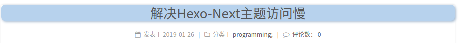
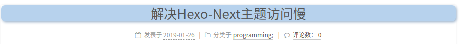

通过修改hexo的css配置文件，我们可以很方便的修改博文的标题.
参考代码：
1 | vi ./themes/next/source/css/_common/components/post/post.styl |
1 | /* Hexo NexT主题修改文章标题样式 */ |
效果预览：

Bonus: 下面的代码可以为鼠标划过标题设置颜色加深
1 | /* 文章内链接文本样式 */ |
通过修改hexo的css配置文件，我们可以很方便的修改博文的标题.
参考代码：
1 | vi ./themes/next/source/css/_common/components/post/post.styl |
1 | /* Hexo NexT主题修改文章标题样式 */ |
效果预览：

Bonus: 下面的代码可以为鼠标划过标题设置颜色加深
1 | /* 文章内链接文本样式 */ |
Author: Fat Bob
Permalink: fatbobgo.github.io/1810214228/
License: Copyright (c) 2019 CC-BY-NC-4.0 LICENSE
Slogan: Why so serious?